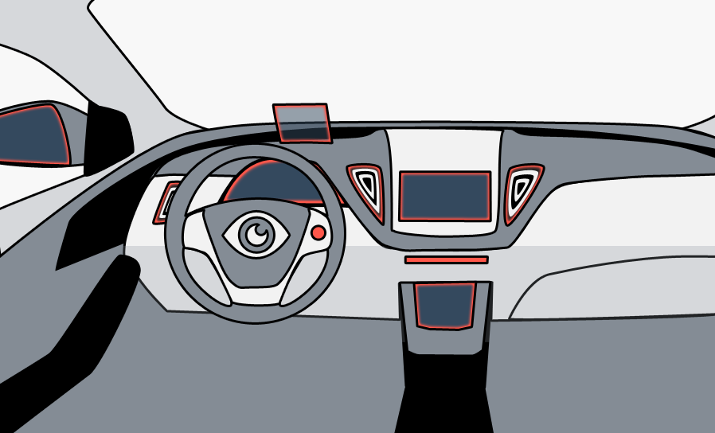

Welcome to Moteye
Gaze Tracking in an Automotive Context
Select by Gaze
Take a quick look at a cockpit component to select it.

Control by Joystick
Interact with the component while keeping your hands on the wheel.

About
Moteye is a ubiquituos computing project at Ulm University developed by master students in 2014/15. In context of this project our concept of Gaze-Context-Mapping was developed. Here eye tracking technology is used in an automotive setting. The concept then was implemented as proof of concept in a prototype.